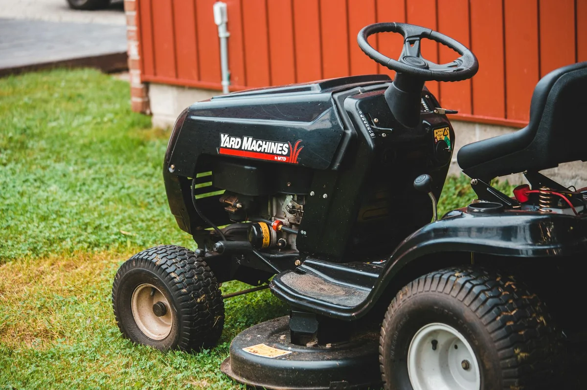

In Winnipeg, most residential lawns need weekly cuts from late May through July when the growing season peaks — but biweekly works fine during slower-growth windows like August and early September. Here's how to tell which schedule your yard actually needs, what each one includes, and why getting the frequency wrong ends up costing you more in repairs and overgrowth fees down the line.
Want your lawn on the right schedule right away? Get a free quote and we'll recommend weekly or biweekly based on your specific Winnipeg yard.
What's the Difference Between Weekly and Biweekly Mowing?
The difference isn't just how often someone shows up — it's how much grass gets removed each visit. The standard rule of lawn care is to never cut more than one-third of the blade length in a single mow. When you stretch to a two-week interval during peak growing season, grass easily grows 3–4 inches, which means removing twice the safe threshold in one pass. That shocks the plant, browns the tips, and weakens the root system over time.
Weekly mowing keeps grass in the ideal height range continuously, with each pass taking a small, clean amount. Biweekly is fine when growth slows down — and in Winnipeg, there are clear seasonal windows when that happens. The key is knowing which window you're in.
When Weekly Mowing Makes Sense in Winnipeg
Winnipeg's short growing season is intense while it lasts. From late May through mid-July, grass commonly grows 1.5 to 2 inches per week with normal rainfall. During this stretch, weekly mowing isn't optional for a healthy-looking lawn — it's the baseline.
Weekly service is especially important if:
- You've fertilized this spring (fertilizer significantly accelerates blade growth)
- Your yard gets regular irrigation or consistent rainfall
- You have a premium grass mix including Kentucky bluegrass or tall fescue
- Curb appeal matters — a shaggy lawn in peak season is hard to miss
- You've recently overseeded or had sod installed
Our weekly grass cutting in Winnipeg is built around the actual pace of the growing season. We don't lock customers into a rigid calendar — we adjust frequency as growth patterns shift through the summer.
During peak growing season in Winnipeg (late May to mid-July), skipping a cut means your next mow removes 3+ inches at once — which scalps the lawn and leaves it yellowed and stressed for days.
When Biweekly Mowing Is Enough — and When It Isn't
Biweekly mowing works well in two distinct windows: early spring before growth fully kicks in (mid-April through mid-May), and late summer once Manitoba's heat slows the lawn into a lower gear (mid-August through September). During these stretches, a two-week gap between cuts won't stress the grass or create an overgrowth problem.
Where biweekly breaks down is peak season. If your neighbor's lawn looks sharp and yours looks overgrown two days after a cut, the schedule — not the mower — is the problem. Tall, unmanaged grass also provides cover for weeds like dandelions and creeping charlie, and makes each subsequent cut harder to execute cleanly. Once you're behind the growth curve, it takes a few weeks of weekly cuts to reset.
Not sure which schedule fits your yard this season? Request a free quote and we'll price out both options for your Winnipeg property.
What Winnipeg's Prairie Climate Does to Mowing Frequency
Winnipeg's prairie climate creates a mowing pattern unlike most Canadian cities. After a Manitoba winter with months of heavy snow load and repeated freeze-thaw cycles, the lawn rebounds fast and hungry in spring. Zone 3 lawns in Winnipeg tend to surge hardest in May and early June, partly because clay soil retains snowmelt moisture well and releases it slowly as the ground warms.
By late July, that same clay soil can lock up during a dry stretch and push the lawn into semi-dormancy. During drought conditions, cutting every week can actually damage grass that's already stressed — it's one of the reasons a flexible schedule beats a fixed one. A good lawn care crew reads these signals and adjusts; they don't just show up on autopilot every Tuesday regardless of conditions.
Cost Difference: Weekly vs Biweekly Lawn Care in Winnipeg
The price gap between weekly and biweekly mowing is narrower than most Winnipeg homeowners expect. A typical residential lot mowed weekly runs approximately $45–$75 per visit depending on yard size, edge work, and current condition. Biweekly visits tend to cost slightly more per visit — around $55–$85 — because there's more material to remove and the job takes longer when grass is taller.
Over a full Winnipeg mowing season of roughly 18–22 visits, the total seasonal cost often comes out similar regardless of which schedule you choose. Weekly cuts produce a healthier, better-looking lawn throughout. If keeping the overall cost predictable matters, our basic lawn care package in Winnipeg is structured to make recurring mowing straightforward and affordable for the full season.
Which Schedule Is Right for Your Winnipeg Yard?
For most Winnipeg homeowners, the smartest approach is a hybrid: weekly from late May through late July, then shifting to biweekly in August and September as growth slows naturally. This mirrors the actual pace of the lawn rather than a fixed calendar, and it produces healthier turf by the time fall cleanup arrives.
If you want a professional crew managing this seasonal shift automatically, our full-yard maintenance plans include flexible mowing schedules designed for Winnipeg's growing season. You get the right cut at the right time — without having to track the calendar yourself.
Book Your Mowing Schedule in Winnipeg
No pressure, no runaround. You'll get a clear price based on your actual property — weekly, biweekly, or a hybrid that follows the season.
Get a Free Quote